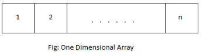
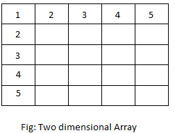

Arrays In Cpp
Array is a collection of data of same types stored in sequential memory location. It is a linear data structure, where data is stored sequentially one after the other. The elements in an array is accessed using an index. For example, In an array of n elements, the first element has index zero and the last element has index (n-1). Elements with consecutive index (i.e. i and i+1) are stored in consecutive memory location in the system.
Array can be divided into following types:
- One Dimensional Array
- Multi Dimensional Array
One Dimensional Array
An array in which data are arranged linearly in only one dimension is called one dimensional array. It is commonly known as 1-D array
Syntax and Declaration of One Dimensional Array
| datatype array_name[size]; |
Here, array_name is an array of type datatype and the number of elements in array_name is equal to size.
For example,
int x[10]; // declares an integer array with 10 elements float arr[5]; // declares an float array with 5 elements char n[50]; // declares an character array with 50 elements |
Arrangement of One Dimensional Array
Example of One Dimensional Array
C++ program to ask 10 numbers from user and display the sum.
#include<iostream.h>
#include<conio.h>
using namespace std;
int main()
{
int arr[10],sum=0,i;
cout<<"Enter 10 numbers"<<endl;
for(i=0;i<10;i++)
{
cin>>arr[i];
sum = sum+arr[i];
}
cout<<"Sum = "<<sum;
getch();
return 0;
} |
Here, a one dimensional array arr of size 10 is declared. Ten numbers are entered by user which is stored in the array arr. Then the sum of these numbers is calculated using a for loop. Finally the sum is displayed outside the loop.
Output
Enter 10 numbers 13 52 4 -41 32 11 19 7 2 25 Sum = 124 |
An array in which data are arranged in the form of array of arrays is called multi-dimensional array. An array can have as much dimensions as required. However, two dimensional and three dimensional array are commonly used.
Syntax and Declaration of Multi-Dimensional Array
| datatype array_name[d1][d2]...[dn]; |
Here, array_name is an array of type datatype and it has n dimensions. The number of elements in a multi dimensional array is equal to the product of size of all dimensions i.e. total number of elements in array array_name is d1*d2* ... dn.
Two Dimensional Array
Two dimensional array is where the data is stored in a list containing 1-D array.
Syntax and Declaration of Two Dimensional Array
| datatype array_name[d1][d2]; |
Here, array_name is an array of type datatype and it has 2 dimensions. The number of elements in array_name is equal to d1*d2.
For example,
int a[10][10]; // declares an integer array with 100 elements float f[5][10]; // declares an float array with 50 elements char n[5][50]; // declares an character array with 250 elements |
Arrangement of Two Dimensional Array
Example of Two Dimensional Array
C++ program to enter elements of a matrix and display them.
#include<iostream.h>
#include<conio.h>
using namespace std;
int main()
{
int arr[10][10],row,col,i,j;
cout<<"Enter size of row and column: ";
cin>>row>>col;
cout<<"Enter elements of matrices(row wise)"<<endl;
for(i=0;i<row;i++)
for(j=0;j<col;j++)
cin>>arr[i][j];
cout<<"Displaying matrix"<<endl;
for(i=0;i<row;i++)
{
for(j=0;j<col;j++)
cout<<arr[i][j]<<" ";
cout<<endl;
}
getch();
return 0;
} |
In this program, a two dimensional array is used to store the content of a matrix. The size of row and column is entered by user. Nested for loop is used to ask the content of elements of matrix and display them. The number of elements in the array (matrix) is equal to the product of size of row and column.
Output
Enter size of row and column: 2 3 Enter elements of matrices(row wise) 12 31 51 19 13 24 Displaying matrix 12 31 51 19 13 24 |
Example of Three Dimensional Array
C++ program to show the concept of three dimensional array.
#include<iostream.h>
#include<conio.h>
using namespace std;
int main()
{
int arr[10][10][10],d1,d2,d3,i,j,k;
cout<<"Enter size of three dimensions: ";
cin>>d1>>d2>>d3;
cout<<"Enter elements of array"<<endl;
for(i=0;i<d1;i++)
for(j=0;j<d2;j++)
for(k=0;k<d3;k++)
{
cout<<"a["<<i<<"]["<<j<<"]["<<k<<"] = ";
cin>>arr[i][j][k];
}
cout<<"Displaying elements of array"<<endl;
for(i=0;i<d1;i++)
for(j=0;j<d2;j++)
for(k=0;k<d3;k++)
cout<<"a["<<i<<"]["<<j<<"]["<<k<<"] = "<<arr[i][j][k]<<endl;
getch();
return 0;
} |
This example show how data are stored and accessed from a three dimensional array. The values of size of three dimensions: d1, d2 and d3 are entered by user. According to these values, a nested loop is created to enter the value of elements of array and display them. The outermost loop runs d1 times, middle loop runs d2 times and the innermost loop runs d3 times.
Output
Enter size of three dimensions: 3 2 2 Enter elements of array a[0][0][0] = 113 a[0][0][1] = 2 a[0][1][0] = 91 a[0][1][1] = 14 a[1][0][0] = 56 a[1][0][1] = 71 a[1][1][0] = 30 a[1][1][1] = 23 a[2][0][0] = 51 a[2][0][1] = 67 a[2][1][0] = 219 a[2][1][1] = 641 Displaying elements of array a[0][0][0] = 113 a[0][0][1] = 2 a[0][1][0] = 91 a[0][1][1] = 14 a[1][0][0] = 56 a[1][0][1] = 71 a[1][1][0] = 30 a[1][1][1] = 23 a[2][0][0] = 51 a[2][0][1] = 67 a[2][1][0] = 219 a[2][1][1] = 641 |
Accessing elements of array
Elements of an array can be accessed by using array name and index of element to be accessed.
For example, consider a one dimensional array
| int a[5]; |
Third element of this array can be accessed as a[2].
Note: First element of array has index 0 and so on.
Elements of multi dimensional array can be accessed similarly as one dimensional array.
For example, consider a two dimensional array
| float x[5][10]; |
Now, element of second row and fifth column can be accessed as x[1][4].
Array of Objects
As we know, array is a collection of similar data types. Since class is also an user-defined data type, we can create the array of variables of class type which is called array of objects. These objects are stored sequentially in the memory. The memory occupied by each object is equal to the sum of memory occupied by its data members.
Syntax And Declaration of Array of Objects
| classname objectname[size]; |
Similarly, the public members of these objects can be accessed as follows:
|
objectname[index].function_name([arguments]); objectname[index].data_name = value; |
The private members can be accessed through member functions.
Example of Array of Objects
C++ program to get and print array of objects.
#include<iostream.h>
#include<conio.h>
using namespace std;
class student
{
char name[100];
int roll,age;
public:
void input()
{
cout<<"Name : ";
cin>>name;
cout<<"Roll : ";
cin>>roll;
cout<<"Age : ";
cin>>age;
}
void output()
{
cout<<"Name : "<<name<<endl;
cout<<"Roll : "<<roll<<endl;
cout<<"Age : "<<age<<endl;
}
};
int main()
{
student s[3];
int i;
cout<<"Enter student's info"<<endl;
for(i=0;i<3;i++)
{
cout<<"Student "<<i+1<<endl;
s[i].input();
}
cout<<endl<<"Displaying student's info"<<endl;
for(i=0;i<3;i++)
{
cout<<"Student "<<i+1<<endl;
s[i].output();
}
getch();
return 0;
} |
A class student is created in this program. It consists of name,age and roll as data members and input() and output() as member functions. An array of objects of class student is created in main() function. For each object in the array, input() function is called to enter data and output() function is called to display data. These functions are called inside a for loop.
Output
Enter student's info Student 1 Name : Jack Roll : 11 Age : 23 Student 2 Name : David Roll : 23 Age : 21 Student 3 Name : Jim Roll : 24 Age : 22 Displaying student's info Student 1 Name : Jack Roll : 11 Age : 23 Student 2 Name : David Roll : 23 Age : 21 Student 3 Name : Jim Roll : 24 Age : 22 |
« Previous Next »